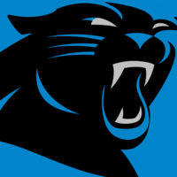

NFC South
Carolina Panthers
CAR · 17 Spiele, davon 9 zu Hause · Bye in Woche 5
← Alle NFL-Teams
DivisionATLNOTB
Kennzahlen
Offense, Regular Season. Jede Zahl trägt ihre Saison und die Zahl der Spiele, aus denen sie stammt.
Nur 2025
Für die laufende Saison 2026 gibt es noch keine Zahlen: stats_player_week_2026.parquet liegt in keinem der gelesenen nflverse-Bündel. Sobald die Datei da ist, erscheint hier ein Umschalter; gerechnet wird sie mit demselben Code und denselben Formeln.
Plays je Spiel
59,5
Ligarang 22 von 32
Saison 2025 · 17 Spiele
Pass Rate
54,4 %
Ligarang 23 von 32
Saison 2025 · 17 Spiele
Yards per Play
4,97
Ligarang 26 von 32
Saison 2025 · 17 Spiele
Grundlage: Saison 2025, Regular Season, 17 Spiele, 1011 Plays (Wochen 1 bis 18).
Buchhaltung
Der Rang reagiert auf das gerade gespielte Spiel. Er ist Buchhaltung und keine Vorschau: er sagt, was war, und nicht, was kommt. Zwei Teams, die im Rang zehn Plätze auseinanderliegen, können in der nächsten Woche die Plätze tauschen, ohne dass sich an ihnen etwas geändert hat. (Befund vom 7. September 2026.)
Spielplan 2026
- W1vs CHI13.09.
- W2@ ATL20.09.
- W3@ CLE27.09.
- W4vs DET04.10.
- W5Byefrei
- W6@ PHI18.10.
- W7vs TB25.10.
- W8@ GB29.10.
- W9vs DEN08.11.
- W10@ NO15.11.
- W11vs BAL22.11.
- W12@ TB30.11.
- W13@ MIN06.12.
- W14vs NO13.12.
- W15vs CIN20.12.
- W16@ PIT27.12.
- W17vs SEA03.01.
- W18vs ATL10.01.
Playoff-Fenster der Liga (Wochen 15–17)Bye-Woche 5
Depth Chart
Stand 2026-09-04 11:57 UTC. Die Offense steht offen; Verteidigung und Special Teams stehen aufklappbar daneben, vollständig wie in der Rohdatei.
Offense
Quarterback
- Bryce Young
- Kenny Pickett
- Haynes King
Running Back
- Chuba Hubbard
- Jonathon Brooks
- AJ Dillon
- Trevor Etienne
Wide Receiver
- Tetairoa McMillan
- Jalen Coker
- Xavier Legette
- John Metchie III
- Jimmy Horn Jr.
- Brycen Tremayne
- Chris Brazzell II
Tight End
- Tommy Tremble
- Mitchell Evans
- Darren Waller
- Ja'Tavion Sanders
- Feleipe Franks
Left Tackle
- Rasheed Walker
- Stone Forsythe
- Ikem Ekwonu
- Brady Christensen
Left Guard
- Damien Lewis
- Corey Bullock
Center
- Luke Fortner
- Sam Hecht
Right Guard
- Robert Hunt
- Brady Christensen
Right Tackle
- Monroe Freeling
- Albert Reese IV
- Taylor Moton
Defense (Base 3-4)
Left Defensive End
- Derrick Brown
- Aaron Hall
Nose Tackle
- Lee Hunter
- Cam Jackson
Right Defensive End
- Bobby Brown III
- TeRah Edwards
- Tershawn Wharton
Left Inside Linebacker
- Devin Lloyd
- Jackson Kuwatch
- Bam Martin-Scott
Right Inside Linebacker
- Bobby Okereke
- Claudin Cherelus
Left Cornerback
- Mike Jackson
- Akayleb Evans
Right Cornerback
- Jaycee Horn
- Will Lee III
Strong Safety
- Tre'von Moehrig
- Zakee Wheatley
Free Safety
- Nick Scott
- Lathan Ransom
Weakside Linebacker
- Patrick Jones II
- Princely Umanmielen
- Thomas Incoom
- Nic Scourton
Strongside Linebacker
- Jaelan Phillips
- Trevis Gipson
Nickel Back
- Chau Smith-Wade
Special Teams
Place kicker
- Ryan Fitzgerald
Punter
- Sam Martin
Long Snapper
- JJ Jansen
Punt Returner
- Jimmy Horn Jr.
- John Metchie III
- Trevor Etienne
Kick Returner
- Jimmy Horn Jr.
- John Metchie III
- Xavier Legette
- Trevor Etienne
Holder
- Sam Martin
Herkunft
Team: Spielplan payload/games.parquet, Saison 2026, 17 Spiele; Konferenz, Division und Klubname aus dem Schema (handgepflegt), Divisionszugehörigkeit gegen div_game geprüft
Depth Chart: 70 Zeilen team CAR, dt 2026-09-04T11:57:41Z in payload/depth_charts_2026.parquet
Kennzahlen 2025: payload/stats_player_week_2025.parquet, season_type REG, Wochen 1–18: 17 Spiele, 1011 Plays; Yards netto 3304 passing -256 sack +1977 rushing = 5025
Teamlogos 20260909-1847-nflverse-logos-1cb9bb (32 squared_logos, nflverse)
Depth Chart: 70 Zeilen team CAR, dt 2026-09-04T11:57:41Z in payload/depth_charts_2026.parquet
Kennzahlen 2025: payload/stats_player_week_2025.parquet, season_type REG, Wochen 1–18: 17 Spiele, 1011 Plays; Yards netto 3304 passing -256 sack +1977 rushing = 5025
Teamlogos 20260909-1847-nflverse-logos-1cb9bb (32 squared_logos, nflverse)
Erzeugt 2026-09-11T05:14:49Z UTC aus 20260905-0122-nflverse-parquet-5b1a0a und 20260909-1015-nflverse-schedules-frueh-w01-ddc931; beide Manifeste geprüft.